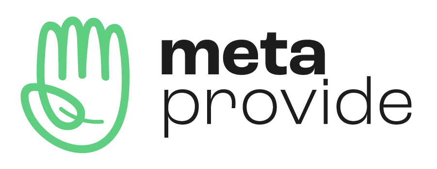
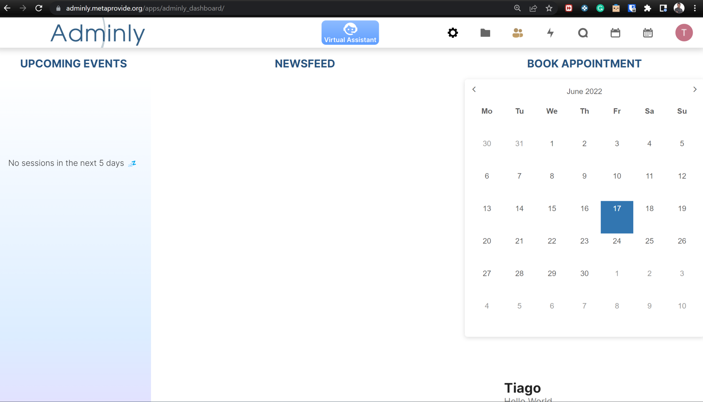

June MetaNewsletter
Welcome to our second-ever MetaNewsletter! We've got lots of updates and even some ways you can get involved in our mission to do good in the world. Just read on to learn about our new look, latest products and opportunities to support our work.
MetaProvide has a new look!

What comes to your mind when you think about Branding?
When we talk about Branding, people usually think we are talking only about icons, colors, letters, format and everything related to brand building. Of course, all this is part of the process, essential for the work of the brand, but Branding is much more than that.
Branding and Marketing are often conflated and, while related, there is a very big difference between the two. When we talk specifically about Marketing, we are focused on selling a product or service. We are talking about conversions, numbers. Now, when we talk about Branding, feelings and emotions will always be the priority.
When we decided to work on Branding, we wanted people to genuinely identify and connect with us. We at MetaProvide, as you know, are unlike any other organisation out there. As a not-for-profit, we need to raise awareness and connect people, to reach our goal of reducing human suffering.
Therefore, we decided to work on rebranding our brand!
What it is the rebranding process?
The process of rebranding is a decision to update what represents and distinguishes us, since the brand ultimately gives life and face to MetaProvide. There are several formats to do a rebranding, from very radical to simple, with small changes to minute details, ultimately making all the difference.
Rebranding is usually done when something has changed, is changing or growing. With each passing day, the brand's message has to become clearer, leading to more dialogue with consumers and attracting new connections.
Rebranding was inevitable for us and came at the perfect time...
Why did we rebrand?
You may be surprised to know that the logo we have replaced today is not our first. On the contrary, this is actually our second logo, and a lot has changed since the creation of MetaProvide.

MetaProvide is in a constant process of learning, evolution and development. To be able to keep up with this growth, and still maintain our essence, our values, motivations and purpose, our brand needs to advance with us and the message we are conveying to the world.
With our first logo, the concept centred upon our four main values: sustainability, integrity, kindness and trustworthiness. Through these values, we wanted to illustrate why MetaProvide was founded.
Now we want to reach and help more people, whether through Adminly, or through new products in the future. Our shared belief is the more you help, whether providers or explorers, the better.
As our essence has matured, with new purposes and products developed along the way, our brand needed to reflect this change. In addition, our team has grown, our diversity has increased and, more than ever, we must put our values into practice internally and externally.
That's why rebranding came at such a perfect time.
About our rebranding
Our rebranding took place to convey our message with greater clarity and simplicity. The values which brought us here remain intact. But the space we hope to open and present to those wanting or seeking help must be projected through our logo.
Our creative process involved the direction of the Branding and Marketing team, with input from MetaProvide's internal team. Through meetings, conversations, forms and brainstorms, everyone was involved from the beginning to capture our essence.
Thanks to the team's ideas and insights, we have an exciting result that we hope will captivate all those who come to know us.
A picture says a thousand words
The idea is simple but profound: a logo with a human hand that is asymmetrical, conveying equality. It also gives a sense of humanisation, an invaluable aspect of our daily internal interactions.
The leaf in the middle of the hand represents our value of sustainability. These images tied together through a single line illustrates the connection we must create with all those willing to join us along this adventure.
What's in a name?
Within the logo text, you may have noticed Meta is emphasised. Meta comes from a combination of two words.
-
Meta – More comprehensive : transcending (A word of
Greek origin).
- Connotations: Western worldview, Brainy, Scientific, Thinking.
-
Metta – Loving kindness : friendliness : benevolence
(A word in Pali, with Buddhist origin).
- Connotations: Eastern worldview, Hearty, Spiritual, Sensing.
It is thanks to Metta that we are all here today and ready to move onwards. The rebranding process can be challenging, but necessary for our image to depict our evolution.
For now, this is MetaProvide's new logo, and we're ready to connect with the world.
Adminly is here to help others help more!
Our new website for Adminly has finally launched! You're very welcome to visit us and bring friends, the more the merrier. We are excited to introduce you to our services, specifically designed with and for well-being providers. But perhaps you'd like a little more background before your accept our friendly invitation...
What is Adminly?
Adminly aims to help well-being providers help more through a secure all-in-one, fully open source platform, and the personal touch of human virtual assistance. Although our platform simpliflies administrative tasks through automation, we also recognise the irreplaceable value of real human contact. That's why we have virtual assistants with genuine smiles (not bots, thank you very much)!
I'm a well-being provider, can Adminly help me?
Most definitely, that's why we're here. In the future, Adminly will be a paid service, but right now you have the opportunity to receive individualised administrative support completely free! We do have a waiting list, so the sooner you sign up, the more likely you will be selected for this exclusive offer. Let our platform and human virtual assistants take on those tasks that eat away at your time and energy.
Check out this video to see how we developed logos, according to their unique needs.
How does Adminly help others help more?
With the support of virtual assistants, our well-being providers have enjoyed more free time while also reaching more clients. But perhaps this comes as no surprise to you?! Day-to-day admin tasks do take their toll, especially when you're trying to juggle multiple apps and worrying about data privacy. We help simplify your business, enabling you to expand, which is a big win for both your and your clients.
Why is this service free right now?
We're still developing our Adminly services, so you will be providing valuable insight about how to best meet providers' needs. We have already invested over 2 years of research and development with well-being providers, just like you, at the heart of our process. Through well over 400 hours of assistance, we have found innovative solutions for addressing various needs, but every provider is unique and we want to learn how we can help you best.
What inspired MetaProvide to create Adminly?
Well-being providers contribute to the well-being of both our local and global communities. This support is essential, especially in these challenging times. Although well-being providers are experts at helping others, who do the have to turn to with all the pressures of running an independent business? We are dedicated to addressing their unique business needs so they can reach more people while taking care of themselves as well.
Where can I get more information?
Check out our newly launched website for Adminly. Have a good nose-around and don't forget to invite some friends! Also, be sure to sign up for our monthly MetaNewsletter so you don't miss out on the latest about Adminly and other well-being services being developed by MetaProvide.
All-in-one platform to simplify your business
Mark your calendars and drum roll please for the first release of Adminly (Alpha version) on June 21st!

This fully open source platform was developed to meet the specific needs of well-being providers. With over 23 dedicated team members, we identified and created tools to simplify your work, including:
- A dashboard for quickly booking new appointments while scanning upcoming events, the status of your sessions and new clients
- A custom calendar to easily locate your free appointment slots and details about each booked event
- A public web page for clients to book appointments according to your availability (say good-bye to those back and forth emails arranging times!)
- Automated email notifications so clients don't forget your appointments...or payments
- Secure, but easily accessible video conferencing (no last-minute panics about accessing your Skype account...or was it Zoom you agreed upon?!)
- An app for managing your clients, with key details and attended sessions at your finger tips
This is just the beginning. A select group of providers will test this version, leveraging these tools for free while enabling us to make further improvements. Be sure to sign up to our waiting list if you're interested!
We're already planning our next release, which will include a custom settings page, bill management app, and more features for sessions and clients information. Be the first to know about our next release by signing up to our mailing list!
Volunteers urgently needed
Can you spare just 30 minutes to help us do good? We are developing a new product and need to interview volunteers as part of our research process.
What is this new product?
We're creating a volunteer-guided service that connects people to a diverse network of well-being professionals. In other words, we want to help people find their way, for free!
Can I volunteer?
Yes, most likely! If you have ever volunteered for any organisation before and/or sought out well-being services, then we would love to interview you. All volunteers and/or explorers are welcome to these interviews, so please do pass the word on to any friends who may be interested.
Wait, what exactly are explorers?
People exploring themselves and trying to find their place in the world through therapy and well-being services. This includes people who were prompted to explore due to some type of distress or purely due to curiosity and desire for personal growth.
I'm in, now how do I volunteer?
Wonderful to have you onboard! Please contact danna.dias@metaprovide.org to sign up or if you'd just like further information.
Want to help, but can't volunteer?
To help us further our mission of doing good through our products (Adminly and MetaFriend) and MetaLand (our future place of “refuge”), please consider donating by pressing the button below.
If you would like to discuss the different ways in which you can contribute, please contact us at fundraising@metaprovide.org.
Thank you again for joining the movement at MetaProvide of making a positive difference in the lives of many…one person and one organization at a time.